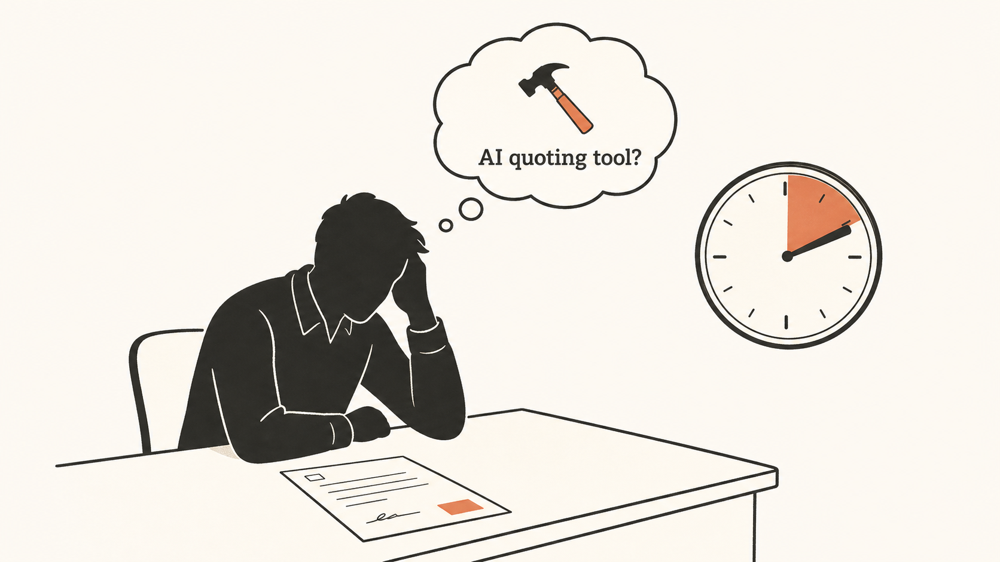
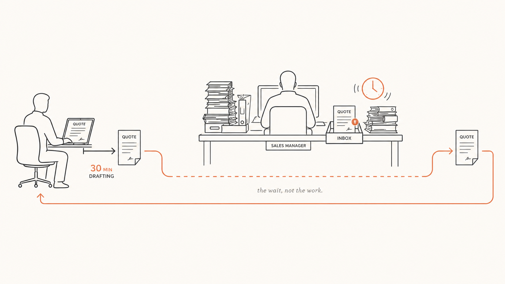
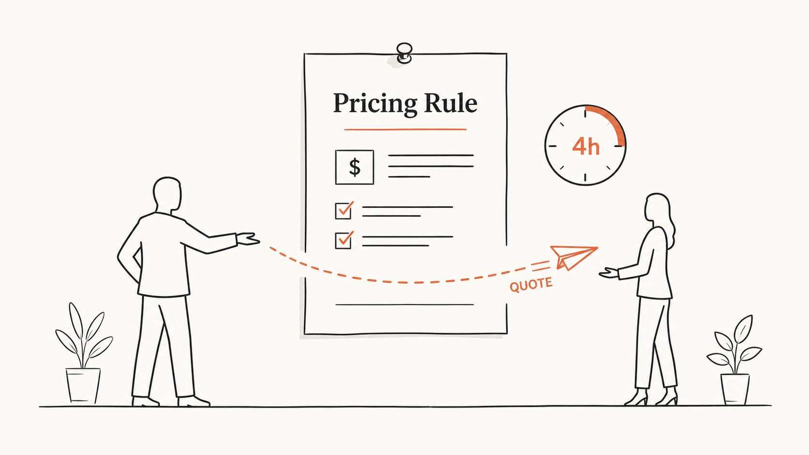

Problem Frame · Ví dụ 1
Founder một công ty SaaS B2B (35 người, Series A) nói câu đó. Anh ấy nghĩ mình cần một AI quoting tool. Chúng ta hỏi vài câu trước đã.
SaaS B2B · 35 người · Series A · framed 14/05/2026
↓ cuộn để đọcSales reps mất trung bình 2 ngày để gửi một báo giá. ~40 báo giá/tháng. Lúc nào pipeline cũng có ~12 deal đang "chờ báo giá". Founder nghe câu trên và dịch thành: "chúng ta cần một công cụ AI làm báo giá."

[Hình · triệu chứng — và cái founder tưởng mình cần]
Soạn báo giá thật sự mất ~30 phút. Hai ngày kia là thời gian chờ duyệt.
Rep mở Excel template cũ, sửa số (~30 phút), rồi gửi Sales Manager duyệt giá. Manager bận → 1–2 ngày sau mới reply. Đôi khi Manager hỏi "sao giá này?" → rep đi hỏi Product → thêm một ngày nữa.
Nút thắt không phải "soạn chậm". Là một bước approval không có SLA, dồn hết vào một người đang quá tải — cộng với việc rep không có sẵn pricing rule nên cái gì cũng phải hỏi. Pricing rule đang sống trong đầu Sales Manager, chưa ai viết ra.

[Hình · "the wait, not the work" — bước duyệt mới là chỗ kẹt]
Sales Manager dành một buổi viết pricing rule thành một trang: 3 tier, ngưỡng chiết khấu, khi nào cần duyệt (chỉ deal >20.000$ hoặc chiết khấu >15%). Rep tự ra báo giá trong khung đó — không cần duyệt. Manager chỉ duyệt ~10% deal lớn.
Kết quả mong đợi trong 30 ngày: báo giá ra tay khách trong 4 tiếng thay vì 2 ngày. Pipeline "chờ báo giá" ≤ 3 deal bất kỳ lúc nào.

[Hình · một trang pricing rule + rep gửi thẳng — không còn cổ chai]
Không có hướng nào cần một môi trường AI ngay bây giờ. Nếu sau này build C: skill /build-quote + MCP HubSpot, AI sinh nháp, Manager duyệt deal lớn — chuyện của quý sau.
Verdict
Một buổi work, gần như không tốn gì, giải quyết phần lớn độ chậm (~96.000$/năm "rò rỉ" vì deal rớt do chậm). AI hay CPQ tool chỉ nhặt được phần "soạn 30 phút" — và chỉ nên đụng tới sau khi bạn đã sửa bước duyệt.
Đánh đổi bạn chấp nhận: Sales Manager phải buông bớt quyền duyệt và tin pricing rule. Đó là điều khó nhất — và là điều thật sự cần xảy ra.
Reps mất ~2 ngày/báo giá · ~40/tháng · ~12 deal luôn "chờ báo giá" · founder nghe thành "cần AI quoting tool".
~3 cái/người/tuần · mỗi cái "chiếm" 2 ngày calendar — không phải 2 ngày work, đa số là chờ.
Excel template cũ → sửa số → gửi Manager duyệt → 1–2 ngày sau reply → đôi khi vòng qua Product → +1 ngày.
Một quyết định chưa ai chốt (pricing rule trong đầu một người) + một bước approval thừa, không SLA, dồn vào một người quá tải.
~12 deal kẹt × ~25% rớt × ~8.000$ ≈ ~24.000$/quý ≈ ~96.000$/năm + tinh thần sales.
Báo giá ra tay khách trong 4 tiếng (vs 2 ngày) · pipeline "chờ báo giá" ≤ 3 deal.
HubSpot, Google Workspace, Slack, Notion · pricing 3 tier + chiết khấu volume, quy tắc chưa viết ra.